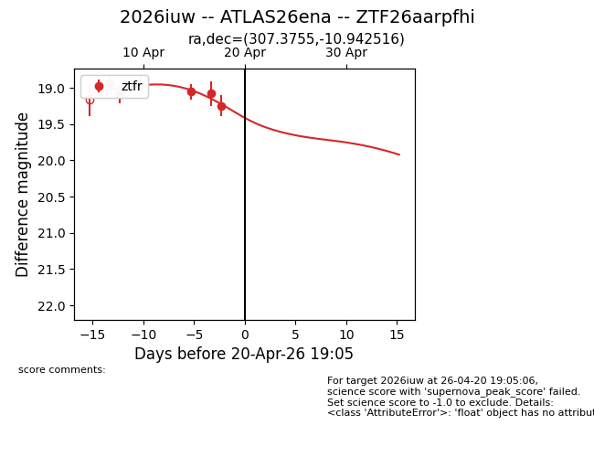
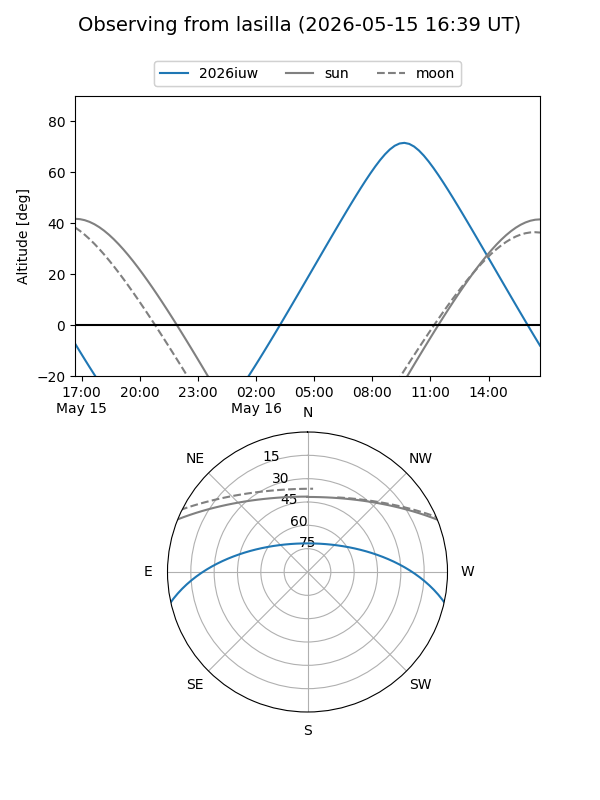
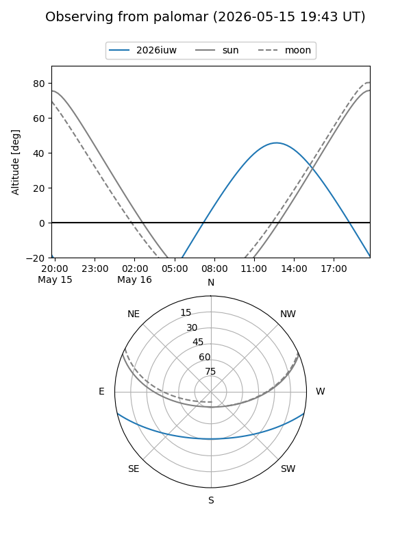
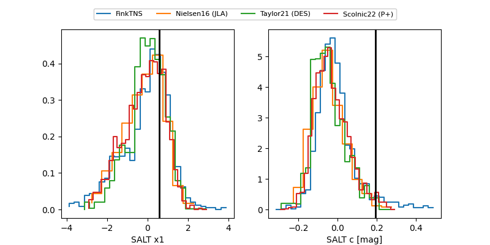

2026iuw
Target 2026iuw at 2026-04-20 19:16
Aliases and brokers:
FINK: link
Lasair: link
ALeRCE: link
TNS: link
YSE: link
alt names
ZTF26aarpfhi (ztf,fink_ztf)
2026iuw (tns,yse)
ATLAS26ena (atlas)
Coordinates:
equatorial (ra, dec) = 307.3755,-10.94252
equatorial (HMS+DMS) = 20:29:30.11,-10:56:33.06
galactic (l, b) = (34.0111,-26.68852)
Flags:
Photometry:
last ztfr=19.25
6 ztfr detections
Lightcurve

Visibility


Additional plots
